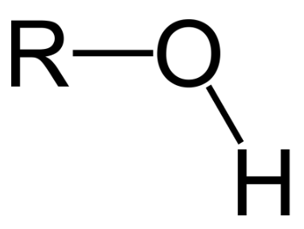
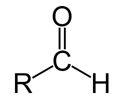
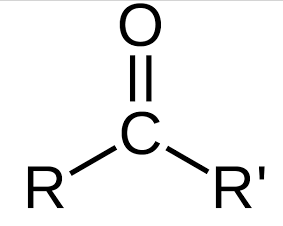
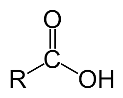
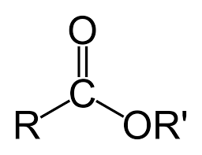

Kyslíkaté deriváty uhlovodíků

Kyslíkaté deriváty uhlovodíků obsahující hydroxylovou skupinu –OH. Název = základní uhlovodík + přípona -ol.
V přírodě běžně se vyskytující látky (mentol v mátě). Kapalné nebo pevné skupenství. Nižší alkoholy se mísí s vodou.

Karbonylová skupina C=O se nachází na konci řetězce (vázána na H). Název = základní uhlovodík + přípona -al.
Reaktivní látky – snadno se oxidují na karboxylové kyseliny.

Karbonylová skupina C=O se nachází uprostřed řetězce (vázána na 2 uhlíky). Název = základní uhlovodík + přípona -on.
Na rozdíl od aldehydů nemají H atom u karbonylové skupiny → méně reaktivní.

Název = uhlovodík + -ová kyselina. Mohou odštěpit proton (kyseliny). Kratší řetězec = silnější kyselina.
Kyseliny s krátkým řetězcem jsou žíravé a štiplavě zapáchají. S dlouhým řetězcem jsou základem tuků.
Obsahují pouze jednoduché vazby C–C. Tuhý skupenský stav (živočišné tuky). Příklady: kyselina palmitová (C₁₆), stearová (C₁₈).
Obsahují jednu nebo více dvojných vazeb C=C. Kapalný stav (rostlinné oleje). Příklad: kyselina olejová (C₁₈, 1 dvojná vazba) – v olivovém oleji.

Vznikají esterifikací = reakce karboxylové kyseliny + alkoholu → ester + voda. Název = alkyl-ester kyseliny ...-ové.
Estery s krátkými molekulami mají výrazné senzorické vlastnosti (vůně, aroma). Tuky a oleje jsou estery glycerolu.
Vyber případ a prokáže své znalosti – každý případ se věnuje jiné skupině sloučenin.
Došly ti životy. Prostuduj si přehled a zkus to znovu!
Všechny případy vyřešeny. Celkové skóre: